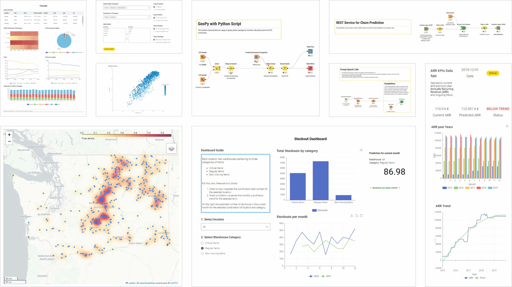
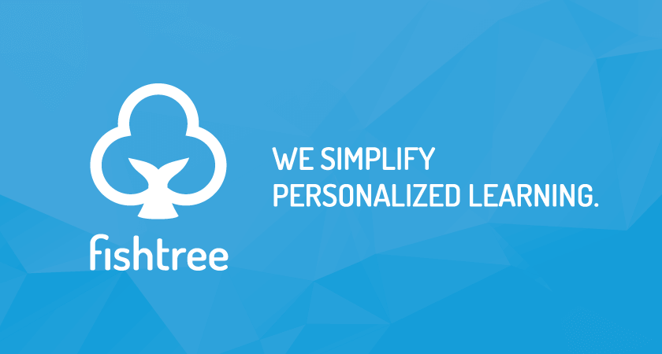

Predictive Analytics in Education: Shaping the Future of Learning
Imagine a school where teachers can predict which students might struggle before exams even start, or where learning materials are tailored to every student’s unique needs. This isn’t science fiction—it’s the promise of predictive analytics in education. Before now, teachers relied on their observation skills and guts to understand students’ strengths and weaknesses. Harnessing the power of data analytics, they can now identify learning gaps based on data-driven insights. This gives them more accurate data, leading to correct analysis that aids student performance. The educators know which areas to work on and address the identified gaps.
In this post, we’ll explore what predictive analytics is, how it works in education, its benefits, challenges, and the exciting future it promises for schools around the world.
What is Predictive Analytics?
At its core, predictive analytics uses historical data to forecast future events or behaviors. In education, this might mean analyzing students’ attendance, grades, engagement, and even socioeconomic factors to anticipate outcomes like performance, dropout risk, or learning needs.
By moving beyond understanding past events to predicting future ones, predictive analytics equips educators with actionable insights that can improve learning outcomes and optimize school resources.
How Predictive Analytics Works in Education
The education sector generates large volumes of data. Schools, colleges and universities have at their disposal a vast amount of data on students through their school records, grades and results, or even their information sheets.(DataScientest 2023). Predictive analytics in education relies on these data. Schools collect information such as:
- Student demographics (age, gender, socioeconomic background)
- Academic performance (grades, test scores, assignments)
- Attendance and participation
- Online learning engagement (clicks, time spent on platforms, quizzes)
Let’s say a school wants to identify students likely to fail math this semester. Historical data might show that students with low engagement in online exercises, poor homework submission rates, and low midterm scores are at risk. A predictive model can analyze current students’ data and flag those who need extra support, allowing teachers to intervene early.
This approach doesn’t replace teachers, rather it enhances their ability to make informed decisions, guiding them on where to focus time and resources for maximum impact.
Real-World Applications of Predictive Analytics in Education
Early-Alert Systems. In an early-alert system, flags are triggered based on academic and nonacademic data from students that signal when they may need additional support. Academic interventions may include tutoring, meetings with an adviser, or assigning a coach or mentor to the student.(Ekowo and Palmer 2017)
Adaptive Technologies. Adaptive tools use data on how students learn to customize the learning environment for each individual student by identifying gaps in knowledge, skills, and abilities and adjusting content delivery to support deeper and more efficient learning.(Ekowo and Palmer 2017)
Benefits of Predictive Analytics in Education
Predictive analytics offers a wide range of benefits that can transform education for students, teachers, and administrators alike.
- Personalized Learning
No two students learn the same way. Predictive analytics helps educators identify strengths and weaknesses, enabling tailored learning experiences. For example, a student struggling with algebra might receive extra exercises and personalized tutoring, while a student excelling in geometry could be challenged with advanced materials.
- Early Intervention
By identifying students at risk of poor performance or dropping out, schools can intervene before problems escalate. Early interventions like mentorship, or remedial classes can dramatically improve academic outcomes.
- Optimized Resource Allocation
Predictive models help administrators allocate resources effectively. If data shows certain classes or subjects have higher dropout risks, schools can assign extra teachers, adjust schedules, or invest in targeted learning tools.
Challenges and Ethical Considerations
While predictive analytics offers tremendous potential, it comes with challenges that educators and policymakers must navigate carefully.
- Data Privacy
Collecting and analyzing student data raises questions about privacy and consent. Schools must ensure data is stored securely and used responsibly, following regulations like GDPR (in Europe) or local privacy laws.
- Bias in Models
Predictive models are only as unbiased as the data they’re trained on. If historical data reflects inequalities such as lower resources in certain schools, models may perpetuate existing disparities, unfairly flagging some students while ignoring others. It is crucial to address bias in predictive models, ensure the statistical significance of predictions beyond race, ethnicity, and socioeconomic status, and forbid the use of algorithms that produce discriminatory results. An algorithm should never be designed to pigeonhole any one group.(Ekowo and Palmer 2017)
- Over-Reliance on Data
While data provides powerful insights, human judgment remains essential. Educators should use predictions as a guide, not a definitive judgment. For instance, a student flagged as “at-risk” might thrive if given the right encouragement and opportunities.
Addressing these challenges requires transparency, fairness, and ongoing evaluation to ensure predictive analytics benefits all students equitably.
Tools and Techniques for Implementing Predictive Analytics in Education
Predictive analytics in education can be implemented using a variety of tools and techniques, depending on the level of technical expertise available within an institution. These tools can be broadly classified into non-technical tools, which require minimal technical knowledge, and technical tools, which require specialized skills in data analysis and programming. This categorization helps institutions select appropriate solutions based on their capacity, resources, and objectives.
Non Technical Tools
- Moodle Learning Analytics

Moodle Learning Analytics is an open-source tool designed to bring advanced analytics to educational institutions without breaking the bank. It equips educators with the tools they need to monitor student performance, pinpoint learning challenges, and make informed decisions to enhance outcomes. Moodle Learning Analytics offers real-time insights that help identify students who may be struggling. By tracking metrics like course completion rates, assessment scores, resource usage, and learning pathways, it delivers a broad view of student engagement and progress.(Top Analytic Tools 2025)
- KNIME

KNIME is a strong option if you’re looking to build your own analytics solutions without hiring a team of developers. Academic institutions have used it to build predictive models that flag students who are likely to withdraw based on early performance. These models can then trigger alerts or referrals to advisors, helping you provide support before the student disengages completely.(Morales 2025)

- Fishtree

Fishtree is designed specifically for personalized learning environments. It tracks how individual students interact with material and automatically adjusts instruction to match their pace and skill level. If a student struggles with a topic, the platform assigns different content or an easier version of the quiz, helping them stay on track without falling behind the rest of the class. Teachers use Fishtree to simplify the challenge of managing multiple ability levels in one classroom. You can monitor student progress in real time and get alerts when someone is disengaged or falling short. This allows for targeted intervention without creating extra administrative work.(Morales 2025)
Technical Tools
- Python (scikit-learn, pandas): Popular for building predictive models and analyzing educational data.
- R: Used for statistical analysis and visualization.
- Tableau or Power BI Tableau and Power BI stand out as enterprise-level tools that transform raw data into visually engaging and easy-to-understand formats. These platforms excel at turning numbers into actionable insights. With interactive dashboards, they highlight trends and identify at-risk students. Power BI, for example, offers exportable templates and real-time, detailed reports that allow educators to zero in on specific knowledge gaps and training challenges. (Top Analytic Tools 2025)
- Machine learning models: Regression, decision trees, random forests, and neural networks are commonly used to predict outcomes and recommend personalized learning materials.
The Future of Predictive Analytics in Education
Predictive analytics in education is still evolving, and the future looks exciting:
- Adaptive learning platforms will use AI to adjust lessons in real-time, based on student performance.
- AI-powered tutoring systems can provide instant feedback and practice tailored to individual learning styles.
- Policy and system-level insights will help governments design programs that target at-risk populations, optimize budgets, and improve nationwide learning outcomes.
- As technology advances, predictive analytics could help bridge educational gaps globally, particularly in regions where resources are limited but data is available to drive smarter decision-making.
Conclusion
Predictive analytics is not just a buzzword, it’s a transformative tool reshaping education. By harnessing data to anticipate outcomes, educators can provide personalized learning, intervene early, optimize resources, and ultimately empower students to succeed.
As schools and institutions adopt predictive analytics responsibly, the future of education promises to be more informed, equitable, and student-focused. In a world where every student’s potential matters, predictive analytics ensures that data and insight work hand-in-hand with human care and judgment to unlock better learning experiences.
References
Ekowo, M., & Palmer, I. (2017, March). Predictive analytics in higher education: Five guiding practices for ethical use (Agenda Item IV-A). New America. https://reportcenter.highered.texas.gov/sites/docid/cache/file/AC2E2644-9DF0-2DF2-467C1FD0F2571918.pdf
DataScientest. (2023, November 5). Data science in education: How data is transforming schools. DataScientest. https://datascientest.com/en/data-science-in-education-how-data-is-transforming-schools
Morales, W. (2025, June 20). 7 must-have business analytics tools to enhance educational outcomes. Walter Morales Entrepreneurial Scholarship. https://waltermoralesentrepreneurialscholarship.com/7-must-have-business-analytics-tools-to-enhance-educational-outcomes/
Top Analytic Tools. (2025, November 29). Top 10 learning analytics tools for educators. https://www.topanalyticstools.com/blog/best-learning-analytics-tools-educators